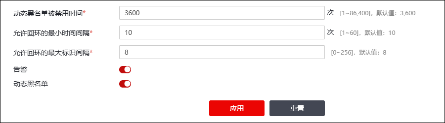

防代理功能利用回环机制防止网络用户通过代理主机实现攻击、避免计费、发起反动言论等非法行为。正常情况下，IP主机发送报文时，会为IP报文头部“identification”字段赋值（“identification”字段占16位，最大值为65535），后续再次发送报文时，会依次递增为报文头部“identification”字段赋值，待发送的IP报文的“identification”字段值为65535时，IP报文的“identification”字段便重新从0开始赋值，此机制称为回环机制。NGFW的防代理功能借助此回环机制确认数据报文源主机是否为代理主机，因为在短期内，如果源主机发送的报文产生了回环，则表明该主机短期内发送了大量数据报文，已成为代理主机。
代理主机具体判定方式及NGFW防代理的方式为：
1)ACL规则启用防代理功能时（关于ACL规则启用防代理功能的操作请参见 访问控制），NGFW对匹配该ACL的报文进行防代理检测：对于同一个源IP主机发送的报文，如果前一个数据报文的报文头部“identification”字段值比当前数据报文大且大于防代理策略设置的“允许发生回环的最小序列号间隔”值，那么就认为该源IP主机发送的报文产生一次回环，记录下当前时间T1。
2)如果该源IP主机发送的报文再次产生回环，记录该次回环时间T2，两次回环时间的差值（T2-T1）小于防代理策略设置的“允许发生回环的最小时间间隔”值，此时该源IP主机即被判断为代理主机。
3)根据防代理策略对代理主机进行处理，处理动作包括：产生告警/放行代理主机发送的报文/将代理主机的IP地址加入动态黑名单阻止代理主机发送的报文通过NGFW。
配置防代理策略的具体操作步骤如下：
| 步骤1 | 选择 ，如下图所示。 |

各项参数的具体说明如下表所示。
参数 |
说明 |
|---|---|
动态黑名单被禁用时间 |
设置代理主机的IP加入动态黑名单后，禁止代理主机发送的报文通过NGFW的时间段，单位：秒；取值范围：1-86400；默认值：3600。超过该时间后，NGFW会将主机IP地址自动从动态黑名单中删除。 说明：该参数仅在启用“动态黑名单”开关时有效。 |
允许发生回环的最小时间间隔 |
防代理检测时，通过两次回环发生的时间间隔，作为判定是否代理上网的依据；如果时间间隔大于该参数设置的值则认为没有代理上网，小于该参数设置的值则认为出现了代理上网。单位：秒；取值范围：1-60；默认值：10 说明： 本参数与“允许发生回环的最小序列号间隔”共同决定是否出现了代理上网。 |
允许发生回环的最大标识间隔 |
防代理检测时，通过同一个源IP主机前后发送报文“identification”字段值的差值，判定是否发生了回环。如果前一个数据报文的报文头部“identification”字段值比当前数据报文大且大于本参数设置的值，那么就认为该源IP主机发送的报文产生了一次路由回环。 说明： 本参数与“允许发生回环的最小时间间隔”共同决定是否出现了代理上网。如果IP主机发送的报文发生两次回环时间差小于“允许发生回环的最小时间间隔”参数设置的值，则表示出现了代理上网。 |
告警 |
设置检测到代理上网时是否告警。 说明： 启用该开关且配置告警事件为“访问控制”的告警后，NGFW检测到代理上网时才会触发告警。关于告警规则的配置具体请参见 告警。 |
动态黑名单 |
检测到代理上网时，是否将代理主机的IP地址加入动态黑名单（查看已加入动态黑名单中代理主机的IP地址请参见 黑名单）。 说明： 1）在没有开启“告警”和“动态黑名单”开关的情况下，NGFW会放行代理主机上网行为，且不会产生告警。 2）在只开启“告警”开关的情况下，发现代理上网行为时NGFW会产生告警，但是数据会被放行；下次代理主机发送的数据报文通过NGFW的时候，继续检查，若又发现代理上网行为，则继续放行报文并告警。 3）在开启“加入黑名单”开关的情况下发现代理上网行为，NGFW会将代理主机IP加入动态黑名单，并删除代理主机当前与NGFW建立的所有连接，再添加一条告警日志（如果“告警”开关开启）。在“动态黑名单被禁用时间”内，从代理主机发来的任何数据报文都无法通过，也不会再产生告警（不管告警开关是否打开）。 |
| 步骤2 | 参数设置完后，点击【应用】按钮使配置生效。 |